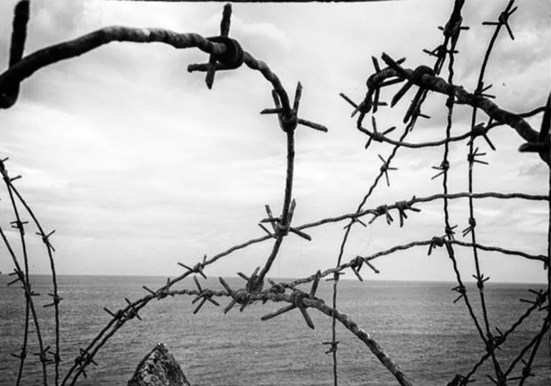
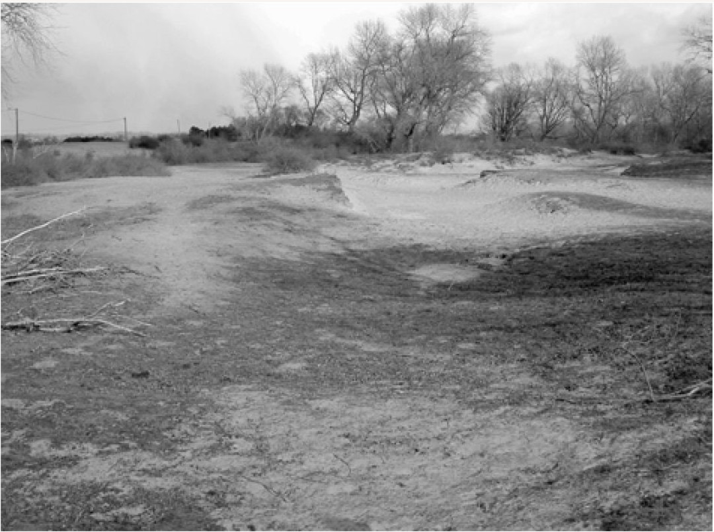
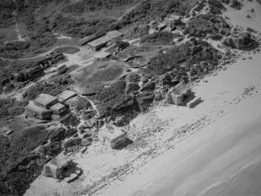
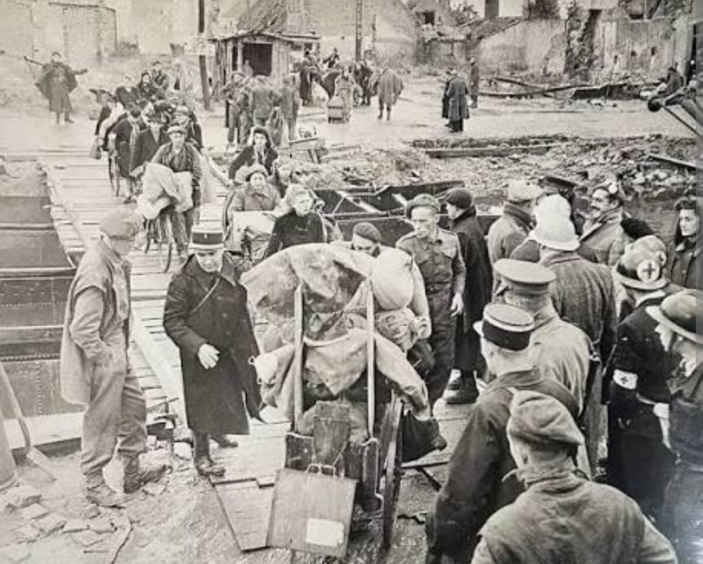
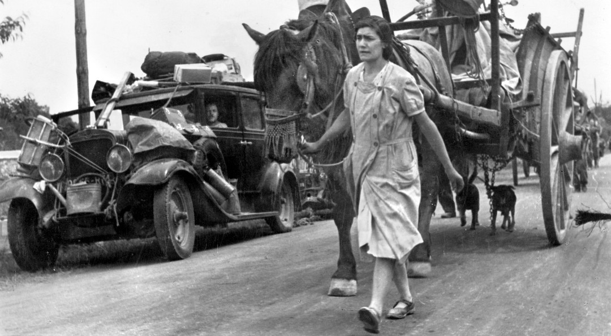
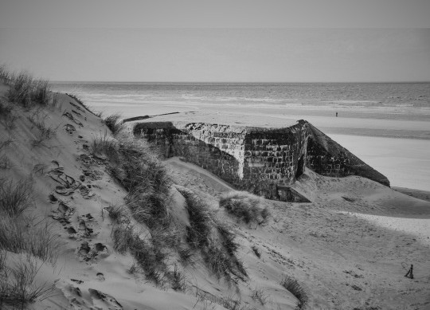

Présentation
Née en 1932 à Dunkerque, Léa Le Comte grandit dans une ville ravagée par les bombardements et placée sous une
occupation allemande stricte.
Enfant discrète et courageuse, elle devient l’une des nombreuses « enfants des dunes » qui traversent les zones
côtières pour rapporter des vivres à leur famille.

Rôle durant la Seconde Guerre mondiale
Les dunes de Malo, du Perroquet et du Nord deviennent des couloirs de passage permettant d’éviter les patrouilles
allemandes.
Les enfants, moins suspects que les adultes, y jouent un rôle essentiel : ils transportent du pain, du lait,
des pommes de terre, du sucre, des légumes, mais aussi du café et du tabac,
produits rares et très recherchés pendant l’Occupation.


Importance historique
L’histoire de Léa représente celle de milliers d’enfants anonymes qui ont contribué, par de petits gestes
quotidiens, à la survie de leurs familles.
En octobre 1944, lors de l’exode civil qui libère plus de 17 000 Dunkerquois de la poche assiégée, Léa est
évacuée avec sa famille vers la Côte‑d’Or, quittant une ville détruite,
affamée et toujours tenue par les troupes allemandes.


